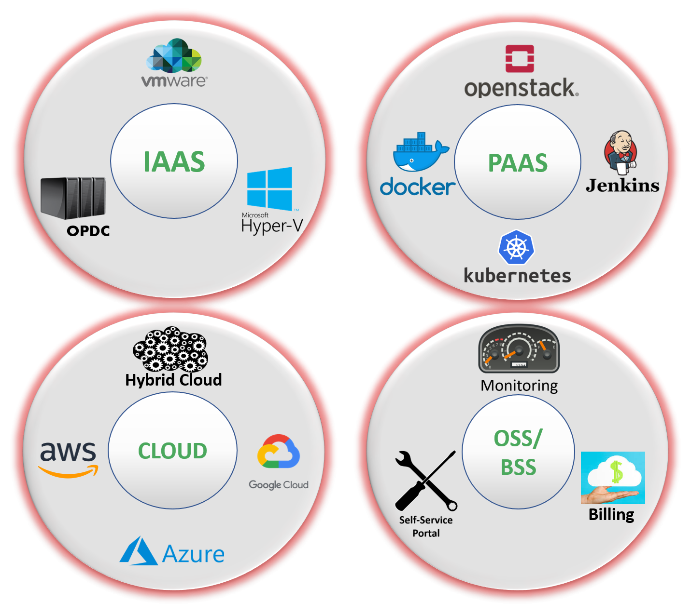

		<!--PAAS-->
		<section class="top-space">
			<div class="row">
				<div class="col-lg-12">
					<!--START PAAS CONTENT-->
					<div class="greenbox">
					<div class="row">
						<!--START PAAS TEXT-->
						<div class="col-lg-3 col-md-4 col-sm-12 col-xs-12">
							<div class="panel">
							  <div class="panel-body">
								<h4>PLATFORM-AS-A-SERVICE</h4>
								<ul class="kva-list">								
									<li><p>Develop, run & manage your web applications without the complexity of building & maintaining the infrastructure</p></li>
									<li><p>Provision the compute, memory & storage resources on a virtualized platform</p></li>
									<li><p>Provide the flexible tool to configure the public and private cloud infrastructure seamlessly</p></li>
									<li><p>Easier for I.T. to perform jobs more faster & efficiently</p></li>
								</ul>
							  </div>
							</div>
						</div><!--END PAAS text-->
						<!--IMAGE-->
						<div class="col-lg-6 col-md-4 col-sm-12 col-xs-12">
							<div>
								
							</div>
						</div>
						<!--START PAAS TEXT-->
						<div class="col-lg-3 col-md-4 col-sm-12 col-xs-12">
							<div class="panel">
							  <div class="panel-body">
								<h4>CLOUD ORCHESTRATION</h4>
								<p>Designed to offer seamless integration of workloads & data across multiple locations, with a <i>single pane of glass</i> using the Hybrid Cloud Management Engine.</p>
								<ul class="kva-list">
									<li><i class="fas fa-chevron-right"></i>Unified Self-Service Portal</li>
									<li><i class="fas fa-chevron-right"></i>Automation</li>
									
									<li><i class="fas fa-chevron-right"></i>End-to-End Lifecycle Management</li>
									<li><i class="fas fa-chevron-right"></i>Role Based Access Management</li>
									<li><i class="fas fa-chevron-right"></i>Operation with Provisioning</li>
									<li><i class="fas fa-chevron-right"></i>Multi-tenancy</li>
									<li><i class="fas fa-chevron-right"></i>Continuous Integration of Cloud & Infrastructure</li>
								</ul>
							  </div>
							</div>
						</div><!--END PAAS text-->
					</div>
					</div>	
					</div><!--END PAAS CONTENT-->
				</div>
	</section>